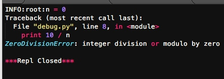
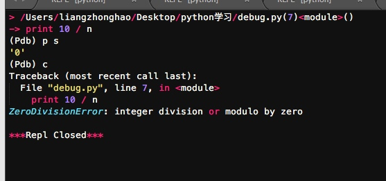

程序能一次写完并正常运行的概率很小，基本不超过1%。总会有各种各样的bug需要修正。有的bug很简单，看看错误信息就知道，有的bug很复杂，我们需要知道出错时，哪些变量的值是正确的，哪些变量的值是错误的，因此，需要一整套调试程序的手段来修复bug。
第一种方法简单直接粗暴有效，就是用print把可能有问题的变量打印出来看看.（这种方法不详细说明了，基本每个写代码的人都比较熟悉这种方法）
断言
凡是用print来辅助查看的地方，都可以用断言（assert）来替代：
# -*- coding: utf-8 -*-
def foo(s):
n=int(s)
assert n!=0,'n is zero'
return 10/n
def main():
foo('0')
main()
assert的意思是，表达式n != 0应该是True，否则，后面的代码就会出错。
如果断言失败，assert语句本身就会抛出AssertionError：

启动Python解释器时可以用-O参数来关闭assert
$ python -O err.py
Traceback (most recent call last):
...
ZeroDivisionError: integer division or modulo by zero
关闭后，你可以把所有的assert语句当成pass来看。
logging
把print替换为logging是第3种方式，和assert比，logging不会抛出错误，而且可以输出到文件：
# -*- coding: utf-8 -*-
import logging
s = '0'
n = int(s)
logging.info('n = %d' % n)
print 10 / n
logging.info()就可以输出一段文本。运行，发现除了ZeroDivisionError，没有任何信息。

加上：
import logging
logging.basicConfig(level=logging.INFO)
之后显示：

这就是logging的好处，它允许你指定记录信息的级别，有debug，info，warning，error等几个级别，当我们指定level=INFO时，logging.debug就不起作用了。同理，指定level=WARNING后，debug和info就不起作用了。这样一来，你可以放心地输出不同级别的信息，也不用删除，最后统一控制输出哪个级别的信息。
logging的另一个好处是通过简单的配置，一条语句可以同时输出到不同的地方，比如console和文件。
pdb
第4种方式是启动Python的调试器pdb，让程序以单步方式运行，可以随时查看运行状态。我们先准备好程序：
# -*- coding: utf-8 -*-
s = '0'
n = int(s)
print 10 / n
然后启动：

输入命令l来查看代码,输入命令n可以单步执行代码,任何时候都可以输入命令p 变量名来查看变量,输入命令q结束调试，退出程序.
pdb.set_trace()
这个方法也是用pdb，但是不需要单步执行，我们只需要import pdb，然后，在可能出错的地方放一个pdb.set_trace()，就可以设置一个断点：
# -*- coding: utf-8 -*-
import pdb
s = '0'
n = int(s)
pdb.set_trace() # 运行到这里会自动暂停
print 10 / n

运行代码，程序会自动在pdb.set_trace()暂停并进入pdb调试环境，可以用命令p查看变量，或者用命令c继续运行
这个方式比直接启动pdb单步调试效率要高很多，但也高不到哪去。
IDE
如果想要有好的设置断点、单步执行体验，就需要一个支持调试功能的IDE。目前比较好的Python IDE有PyCharm：
https://www.jetbrains.com/pycharm
写程序最痛苦的事情莫过于调试，程序往往会以你意想不到的流程来运行，你期待执行的语句其实根本没有执行，这时候，就需要调试了。
总结
虽然用IDE调试起来比较方便，但是最后你会发现，logging才是终极武器。